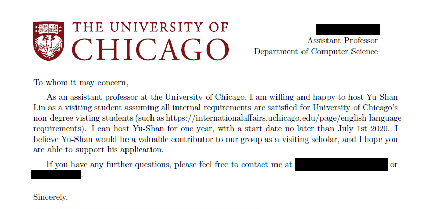

本文介紹了我為了千里馬計畫如何尋找國外的指導教授、準備面談的方法和實際遇到的狀況。
前情提要
之前提到了為了追求更高的研究境界 (?)，我決定申請千里馬計畫。 為了要申請千里馬，必須要先準備以下幾份資料：
- 外國語文能力鑑定證明
- 國外研究機構或國外指導教授接受前往研究之同意函
- 所長或博士指導教授出具之資格證明
- 所長或博士指導教授出具之推薦函
- 大學、碩士及博士學程歷年成績單
- 國外研究計畫書
（注意：這個清單是 2019 年申請千里馬的規定。每年的規定還是以每年公佈為準。）
其中本篇會以如何尋找國外機構或教授並取得同意函為目標說明。
國外機構/教授同意函的目的

圖一、我的國外教授接受函
國外機構或教授同意函指的簡單來說就是國外研究機構或指導教授發給你，表示有意願收你的證明。 如果學校本來就有跟某些姊妹校合作，就可以透過學校來媒合教授。 不過以博士生的狀況來說，如果不是為了出去玩的話，通常都會想要找跟自己研究主題相關的機構或教授做研究。 這種情況就比較難讓學校幫你找。 因此大多要自己主動出擊。
我取得同意函的時間軸
- 2019/5 月中旬 - 決定申請千里馬計畫
- 2019/6/9 - 跟指導老師討論要前往哪一位教授的 lab
- 2019/7/8 - 決定要前往的實驗室與連絡上國外的教授
- 2019/7/18 - 與國外教授線上面談
- 2019/7/30 - 收到國外教授的接受函（超驚險）
- 2019/7/30 - 千里馬申請校內期限
我如何找國外教授？
我的研究領域是「雲端資料庫系統」，更細部地說，我的研究主要在探討如何建立一個具有高度彈性、能自動分配負載、根據需求自動重新分配資料的分散式資料庫系統。 這個研究就算是在現在很熱門的資訊工程學系裡面，也算是很冷門的領域。 因此並不是到任何學校都有可以合作的教授。
首先我先列了一個名單，包含了在資料庫系統領域之中比較出名，也相對比較年輕的幾位教授。 列的時候最主要考慮的點就是是否容易透過老師搭上線。 如果老師本來就有認識的話更好，這樣可以省去中間透過他人介紹的時間。 我也聽說過有人是靠之前發表論文時，參加國際會議建立的人脈。 不過這種通常是參加會議時就會先講好。
無論如何，名單列出之後，我跟我的指導老師討論，並由我的指導老師寄第一封信給國外教授作為開頭。 雖然不一定要由指導教授起頭，但是這種出國研究通常是實驗室與實驗室間的合作，因此由實驗室的老闆開頭我覺得也會比較合理，另一方面信件也比較不會被國外教授忽略XD。
由指導教授開頭之後，國外教授很快就表示願意考慮，不過要先經過一個面談。 我一看到要面談就非常緊張 (一生中從來沒有經歷過英文面試的 27 歲博士生)，不過想一想也是合理的，誰會想隨便收一個完全不知道要做什麼的人來自己的實驗室~
面談準備
因為這其實也不算正式的面試，所以我一開始也不是很確定該怎麼準備。 不過從國外教授的來信可以得知他主要想了解我的研究方向與研究目標。 因此我主要的準備方向就以說明我過去的研究，以及博士論文的方向等等為主。
另外我也參考了一些網路上的文章。 雖然很難找到交換面談的分享，但是卻可以找到很多申請 PhD Program 的面試經驗。 準備的方向可能稍稍不同，不過我認為還是很有參考價值的。 以下是我參考的幾篇文章：
- [心得] PhD program - unofficial interview
- [分享] On-campus/on-site interview 的安排與準備
- [心得] 理工人Skype Interview 101
- Phone Interview Questions and Answers
除此之外，我也建議稍微看過該教授的最近一兩年的論文。 不用看得很細，只要大概知道要解決的問題就好。 一方面可以先看看有沒有甚麼有興趣的方向，另一方面也可以讓教授覺得你準備充分XD
模擬問題
我以我的研究方向與以上文章為基礎，自己設想了一些教授可能會問的問題：
- Cloud you introduce yourself?
- Cloud you tell me what your research is mainly about?
- What kind of researches you are interested in?
- Why do you apply my lab?
- What will you do after you get your degree?
- Do you have any question?
然後我再以這些題目為基礎，自己打了一份回應的草稿。 我先針對每個問題寫下大致想講的方向。 例如自我介紹我列出：年級、主修、主要研究興趣、擁有的程式技能等等。 接著再以這些關鍵字為中心，一一寫出口語化的回答。
完成草稿之後，我先試著說一遍。 說的途中如果發現說起來怪怪的地方，就修正句子。 若發現內容不通暢或有缺失，就補上更多內容。 建議是在這個階段能多加多少就加多少內容，因為實際上可能會因為教授打斷或者緊張等理由而無法全部提到。
後來證明這個練習對我幫助很大，至少在問到類似的問題時腦中可以很快閃過練習時的句子。
實際面談狀況
我後來也記錄了一下實際面談大概的狀況：
- 互相問好
- 教授開頭，大致說明一下他這次面談想了解的問題
- 對研究的看法
- 研究的目標
- 研究怎麼收尾
- 在這一年交換想做甚麼
- 打算如何達到畢業目標
- 畢業後打算做甚麼
- 我開始說明這次交換的目標
- 主要圍繞在想要透過這次交換建立人脈、了解不同研究室的做事方式等等
- 說明我的研究近況
- 這段我就用到了預先準備好的句子
- 我反問了一些教授的研究近況
- 這邊就利用到了之前預先做的功課，可以多打探一下教授對哪種題目比較有興趣。 另一方面，我也藉由這個機會稍微休息一下，讓教授講講話XD。
- 教授說明他最近的研究有哪些，未來可能會有興趣的題目
- 我們花了很多時間在這裡，這邊我問了教授很多關於他近期研究的問題。 一方面我可以多了解教授的研究方向，另一方面互動式的對話也比單方面的演說來的容易。 很適合我這種英文不好的人XD
- 我說明了我可能會有興趣的題目方向，並與教授討論可以研究的部分
- 不過我們最後並沒有討論出一個確切題目，所以實際要做甚麼還是未定。 不過是有幾個可以做的方向。
- 聊一下畢業後打算做甚麼
- 聊一下我最近在研究新的程式語言 (Rust)
- 教授問一些關於交換的問題
- 打算甚麼時候來？
- 大概要待多久？
- 有任何補助嗎？
- 我有找其他教授嗎？
- 芝加哥大學有一些基本的 英文要求，可能要確定是否有符合
- 教授反問是否有其他問題，我也提出了一些問題與請求
- 有甚麼研究相關的事情我可以先做嗎？
- 除了英文門檻之外，芝加哥大學是否有對交換生的額外要求？
- 提出我需要教授的一封同意函來申請補助
收到同意函
在面談的當下，教授就表明願意收我了。 原本應該很快就能拿到同意函。 可是在面談快結束時，我又查到了與教授提供的英文門檻相異的另一個門檻。
當時我的托福成績已經拿到，總分雖然有過 90 分，但是口說只有 17 分。 因此我其實沒有過第二個門檻。 我當下請教國外教授，他也表示會幫我跟學校的負責人確認。
結果當時不知道是出了甚麼問題，據教授所說，他去信去問他們的負責人，但是遲遲沒有收到回覆。 我們也因此拖了一個多禮拜的時間。 最後因為千里馬申請的時間期限快到了，他就幫我先寫一份同意函，但加上一條「須通過英文門檻」的但書。
… assuming all internal requirements are satisfied for University of Chicago’s non-degree visting students (such as https://internationalaffairs.uchicago.edu/page/english-language-requirements).
幸好我後來打電話問科技部承辦人，他們表示只要有教授表明願意收我就可以接受。 最後我也如願地拿到了補助！
給其他申請人的建議
- 一定要提早開始找教授，最好是預留一到三個月的時間。 我因為運氣不錯，第一位教授就願意收我。 如果沒收的話，可能要花更多時間找教授。
- 找國外教授時，如果能利用自己指導教授的人脈，最好盡量利用。
- 如果國外教授要求面試，建議先擬定一些可能的問題，然後擬好一份逐字稿練習。 可以增加口說的流暢程度與信心。
- 面談時也可以多對教授提問，可以避免自己一直講話很尷尬，而且有互動的話也比較不會緊張。
祝各位找教授順利！
我的全部時間軸
以下紀錄從決定申請到現在為止發生的重要事件：
- 2019/5 月中旬 - 決定申請千里馬計畫
- 2019/6/1 - 科技部系統開放申請
- 2019/6/9 - 跟指導老師討論要前往哪一位教授的 lab
- 2019/6/12 - 報名 TOEFL iBT 考試
- 2019/6/29 - TOEFL iBT 應考
- 2019/7/8 - 決定要前往的實驗室與連絡上國外的教授
- 從研究要去哪間研究室到這步驟拖了點時間，因為當時正在忙著投一篇論文。 這也是為什麼要提早找教授，不然跟我一樣卡個論文 deadline 就可能會 delay。
- 2019/7/9 - TOEFL iBT 開放線上查成績（總成績：93）
- 2019/7/18 - 與國外教授線上面談
- 2019/7/30 - 收到國外教授的接受函（超驚險）
- 2019/7/30 - 送出申請，並由校內統合送出
- 2019/11/29 - 科技部官網公布 通過名冊
- 2019/12/4 - 通知國外指導教授並開始申請 DS-2019 (申請美國簽證必備文件)
- 2019/12/26 - 參加芝加哥大學英文能力測驗 (APEA)
- 2020/1/7 - 收到芝加哥大學通知通過 APEA 測驗，並完成 DS-2019 申請
- 2020/1/16 - 收到 DS-2019
- 2020/1/21 - 送出校內簽約資料，以申請補助款
- 這個需要付 DS-2019 的副本，加上我到 1/18 都不在台灣。 所以拖到這個時候才提出申請。
- 2020/1/29 - 填寫 DS-160 以申請簽證
- 2020/2/3 - 到郵局完成簽證費繳費，並預約 AIT 面試時間
- 2020/2/18 - 到台北內湖 AIT 進行面試，當場收取護照
- 2020/2/20 - 收到護照並附上 J-1 Visa
- 預計 2020/3/30 前抵達芝加哥大學
待續…
之後預計說明如何準備托福~